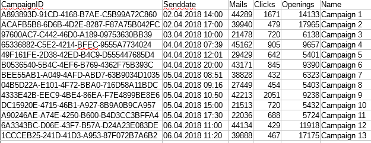

Report
Dataset
- Meta-Data of Newsletter Campaign
- ID, Time of Sending, Sent Mails
- Behavioural Data (All include Send ID and Mail ID)
- Openings - Time, Location (based on IP)
- Read Times - Duration (up to 10 seconds)
- Clicks - Time, Link ID, Location (based on IP)
Meta-Data

Behaviour Data

Tasks
- Goal
- The user can analyse the behavior of newsletter subscribers to optimise the future newsletter model.
- Interaction
- select newsletters to compare with the relevant key performance indicators.
Dashboard
The dashboard consists of 4 visualizations (a list of all campaigns with color coding, a scatter plot, grouped bar charts and a location visualization):

Implementation
Limitations
Our solution can handle just a small number of campaigns (13 campaigns in our example dataset), if there were a higher amount we would have to provide some kind of a preselection, e.g. selecting a time-range.
Answer the tasks
- The user can select up to two newsletter campaigns.
- The user can view a scatter plot showing the pair of Click Rate and Open Rate for all campaigns, where the two selected ones are highlighted.
- The user can compare performance indicators with bar charts for Open Rate, Click Rate and Reading Duration.
- The user can view location dependencies of all performance indicators by a map which shows all indicators mapped to the number of recipients of capitals, one the one hand relative to the region or to the whole country.
Findings/Insights
- The bar charts on the map where sometimes very small, as Vienna had the largest number as capital city, therefore we decided to let the user switch between the whole country and the regional.
- The map seams to be one of the more interesting visualization, e.g. by comparising campaign 5 and 6, campaign 6 seams to be better everywhere in the bar charts, but the map shows that the click rate in Tirol was very much better for campaign 5.
Conclusion